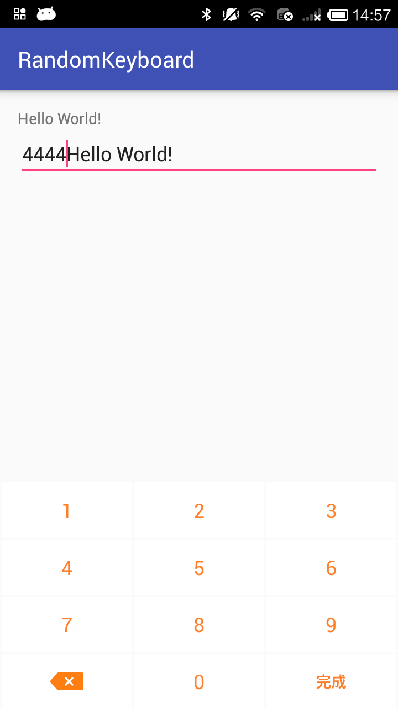
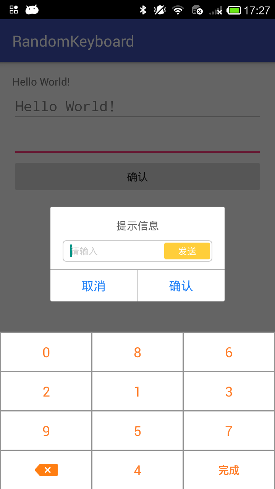

randomkeyboard

基于PopWindow封装的自定义键盘，支持随机键值
主要有一下优点：
1、纯数字的自定义键盘；
2、使用助手类的方式，可以使用一个对象管理多个输入框；
3、不依赖于页面布局，使用内部使用Popwindow的方式实现键盘弹出，更加模块化。
4、建议使用源码的Module的方式引入，方便修改样式；
使用方式
1、导入Module；
2、在对应的view初始化的时候加入以下代码：
- 普通的Activity或者Fragment中使用
keyboardHelper = new KeyboardHelper(this)
.addEditText((EditText) findViewById(R.id.edittext1))
.addEditText((EditText) findViewById(R.id.edittext2))
.setShouldRandom(true);
- Dialog中使用（当然这里是返回Dialog直接findView的方式，但是你只要通过addEditText设置都行）
Window window = alertDialog.getWindow();
final EditText edtWithdrawCashDynamicCode = (EditText) window.findViewById(R.id.edt_withdraw_cash_dynamic_code);
keyboardHelper.addEditText(edtWithdrawCashDynamicCode);
普通EditText

包含EditText的Dialog
